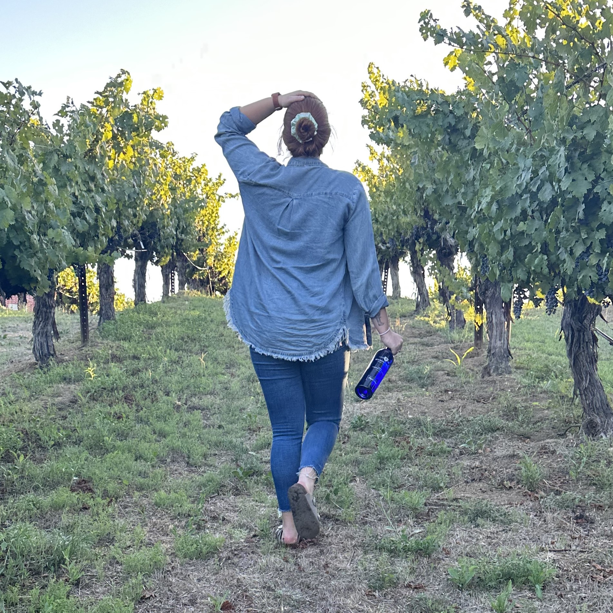

<!DOCTYPE html>
<html lang="en">
    <head>
        <title>Crafted Swag :: About Me</title>
        <meta charset="utf-8">
        <link rel="stylesheet" href="crafted.css">
        <meta name="viewport" content="width=device-width, initial-scale=1.0">
        <style>
            img {
                float: left;
                padding-top: 2em;
                padding-right: 2em;
                padding-bottom: 2em;
            }       
    </head>
    <body>
        <div id="wrapper">
            <header>
                <h1><a href="home.html">Crafted Swag</a></h1>
            </header>
            <nav>
                <ul>
                    <li><a href="home.html">Home</a></li>
                    <li><a href="about.html">About Me</a></li>
                    <li><a href="gallery.html">Gallery</a></li>
                    <li><a href="faqs.html">FAQs</a></li>
                    <li><a href="reviews.html">Reviews</a></li>
                    <li><a href="contact.html">Contact Me</a></li>
                </ul>
            </nav>
            <main>
                
                <h3>Welcome to Crafted Swag!</h3>
                    <p>I&apos;m Rissa, the heart behind my vibrant world of vinyl crafts. From a young age, I have been enamored with the beauty of handmade creations and the joy they bring to both the creator and those who appreciate them.</p>
                    <p>Vinyl swag is not just a hobby for me; it is a passion that fuels my creativity and allows me to translate my imagination into tangible works of art. Every piece I create is a labor of love, carefully designed and crafted with attention to detail and a sprinkle of artistic flair.</p>
                    <p>My journey into the world of vinyl began with my first design with my mother&apos;s Cricut machine with some matching shirts for a trip my best friend and I took to Disneyland. Over the years, I have honed my skills, experimented with various techniques, and developed a unique style that I am thrilled to share with you.</p>
                    <p>Here at Crafted Swag, I strive to bring you an array of custom items that reflect my dedication to quality and creativity. Whether it's matching shirts or home decor, I pour my heart into each creation, aiming to make every piece as special and one-of-a-kind as the person who will cherish it.</p>
                    <p>Beyond creating beautiful pieces, I believe in the power of vinyl to bring people together and inspire a sense of joy and connection. I hope that my vinyl swag not only adorn your space but also brighten your days and add a touch of uniqueness to your life.</p>
                    <p>Thank you for being a part of my journey. I'm excited to share my passion with you and create something magical together.</p>
                    <p>Happy crafting!</p>
            </main>
            <footer>
                Copyright &copy; 2023 Crafted Swag
                <br>
                <a href="mailto:marissajohnson22@outlook.com">Marissa Johnson</a>
            </footer>
        </div>
    </body>
</html>
